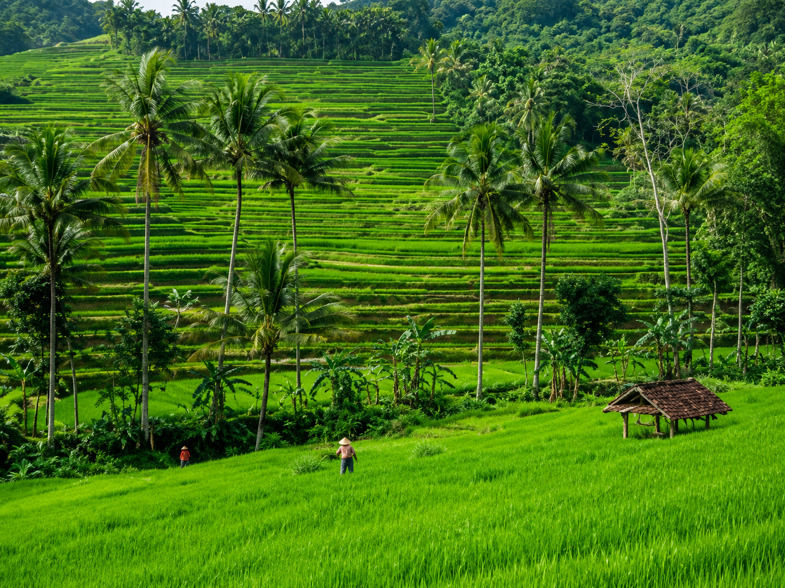

di Desa Beji
Profil Desa
Mengenal
Desa Beji
Desa Beji terletak di bagian utara Kabupaten Banjarnegara, tepatnya di Kecamatan Banjarmangu.
Kawasan agraris yang subur ini dihuni masyarakat yang guyub dan religius,
dengan mayoritas penduduk bermata pencaharian sebagai petani dan buruh tani.
VISI dan MISI
VISI
"MENUJU BEJI YANG MANDIRI,
BERMARTABAT, ADIL, DAN SEJAHTERA,
DAN BERAKHLAK MULIA''
MISI
1. Menyelenggarakan pemerintah desa yang efisien, efektif, dan bersih dengan mengutamakan
masyarakat.
2. Meningkatkan sumber - sumber pendanaan pemerintahan dan pembangunan desa.
3. Mengembangkan pemberdayaan masyarakat dan kemitraan dalam melaksanakan pembangunan desa.
4. Meningkatkan kualitas sumber daya manusia dalam pembangunan desa yang berkelanjutan.
5. Mengembangkan perekonomian desa.
6. Menciptakan rasa aman, tentram, dalam suasana kehidupan yang demokratis dan Agamis.
| Desa | Beji |
| Kecamatan | Banjarmangu |
| Kabupaten | Banjarnegara |
| Provinsi | Jawa Tengah |
| Kode Pos | 53452 |
| Letak | Utara Kab. Banjarnegara |
| Wilayah | 12 RT · 3 RW |